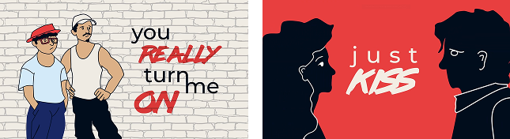
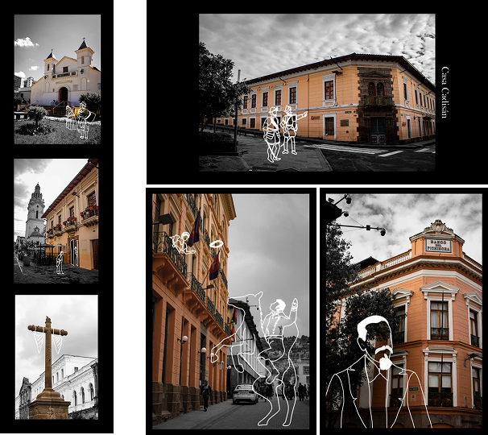

Proyecto de motion graphics que abarca la selección de estilo, color, ilustración de
los elementos, el
diseño de los personajes y su animación en Adobe After Effects,
cuidando el lypsinc, el ritmo, la
narrativa visual y la funcionalidad del video.

